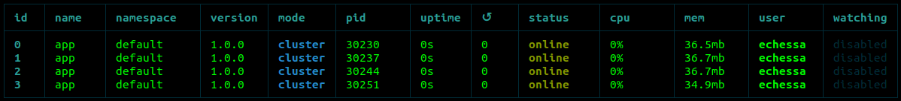
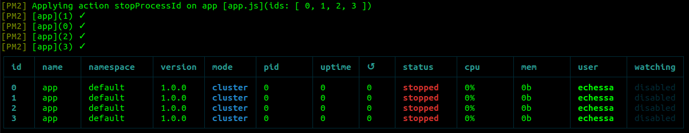

在构建应用程序产品时，我们通常会寻找一些方法来尽可能优化应用程序的性能。在本文中，我们将探讨一种能有效改善 Node.js 应用程序处理工作负载的方法。
Node.js 实例是在单个进程中运行的，意味着在如今大多数计算机都在使用的多核系统（multi-core system）上，该应用程序不会使用所有 CPU。要想使用其他可用 CPU，可以通过集群模式启动 Node.js 进程并在它们之间分配负载。
因为可以同时为多个客户端提供服务，拥有多个进程来处理请求可以有效提高服务器的吞吐量（每秒请求数）。在本文中，我们将首先探讨如何使用 Node.js 集群模块创建子进程，然后我们将探讨如何使用 PM2 进程管理器管理集群。
Node.js 集群模块支持创建同时运行并共享同一服务器端口的子进程（工作进程）。每个衍生的子对象都有自己的事件循环、内存和 V8 实例。子进程使用进程间通信（IPC）与父进程进行通信。
有多个进程来处理传入请求意味着可以同时处理多个请求，如果一个工作进程上有长时间运行或阻塞操作，其他工作进程可以继续处理传入请求。即使存在阻塞操作也不影响整体任务，完成正常传入任务以及阻塞任务，整个应用程序就可以结束运行。
通过运行多个工作进程，我们可以在不停机情况下更新应用程序。我们可以在修改应用程序，每次只重启一个工作进程，等待一个子进程完全生成后再重启另一个子进程。这样，在我们更新应用程序时，就一直会有工作进程在维持运作。
传入的连接是通过以下两种方式之一在子进程之间分配的：
要查看集群的优势，我们将从不使用集群的 Node.js 应用程序示例开始，然后将其与使用集群的应用程序进行比较：
const express = require('express');
const app = express();
const port = 3000;
app.get('/', (req, res) => {
res.send('Hello World!');
})
app.get('/api/:n', function (req, res) {
let n = parseInt(req.params.n);
let count = 0;
if (n > 5000000000) n = 5000000000;
for(let i = 0; i <= n; i++){
count += i;
}
res.send(`count 结果是 ${count}`);
})
app.listen(port, () => {
console.log(`App 监听端口 ${port}`);
})
这有点假，在现实世界中基本不存在，但它能够满足我们的需求。这个应用程序包含两条路径 —— 一条路是由返回字符串 “Hello World”，而另一条路是由采用路由参数 n，在返回包含最终统计的字符串之前，将 n 个数字加到一个 count 变量中。
该操作是一个 O(n) 操作，如果我们将 n 设定为一个足够大的值，这个方法就能够简单模拟在服务器上长时间运行操作的情景。我们将 n 限制在 5,000,000,000 —— 让我们的计算机不必运行如此多的操作。
如果你使用 node app.js 运行应用程序，并向它传递一个适当小的 n 值（例如 http://localhost:3000/api/50），它将快速执行并几乎立即返回响应。根路由（http://localhost:3000）也会快速返回响应。
当你传递给它一个比较大的 n 值的时候，你将看到在一个进程上运行应用程序所带来的问题。你可以自己试试传递一个 5,000,000,000（通过 http://localhost:3000/api/5000000000）这么大的数字给它。
应用程序可能需要几秒钟才能完成你的请求。而如果你打开另一个浏览器选项卡并尝试向服务器发送另一个请求（发送到 / 或 /api/:n 路由），该请求将需要几秒钟才能完成，因为单个进程将忙于处理另一个长时间运行的操作 —— 单个 CPU 内核必须先完成第一个请求，然后才能处理另一个请求。
现在，让我们使用应用程序中的集群模块来产生一些子进程，看一下是如何改进的。
以下是修改后的应用：
const express = require('express');
const port = 3000;
const cluster = require('cluster');
const totalCPUs = require('os').cpus().length;
if (cluster.isMaster) {
console.log(`CPU 数量是 ${totalCPUs}`);
console.log(`正在运行 ${process.pid}`);
// 分叉工作进程
for (let i = 0; i < totalCPUs; i++) {
cluster.fork();
}
cluster.on('exit', (worker, code, signal) => {
console.log(`销毁进程 ${worker.process.pid}`);
console.log("分叉另一个工作进程！");
cluster.fork();
});
} else {
const app = express();
console.log(`启动进程 ${process.pid}`);
app.get('/', (req, res) => {
res.send('Hello World!');
})
app.get('/api/:n', function (req, res) {
let n = parseInt(req.params.n);
let count = 0;
if (n > 5000000000) n = 5000000000;
for(let i = 0; i <= n; i++){
count += i;
}
res.send(`count 结果是 ${count}`);
})
app.listen(port, () => {
console.log(`App 监听端口 ${port}`);
})
}
这个应用程序做了和之前一样的事情，但是这一次，我们正在产生几个子进程，它们都将共用端口 3000，并且能够处理发送到这个端口的请求。工作进程是使用 child_process.fork() 方法生成的。该方法返回一个 ChildProcess 对象，该对象具有一个内置的通信通道，允许消息在子进程与其父进程之间来回传递。
我们在运行应用程序的机器上创建尽可能多的子进程。建议不要在计算机上创建超过逻辑核心数量的工作进程，因为这可能会导致进程调度方面的开销。出现这种情况是因为系统必须调度所有创建的进程，以便每个进程都能轮到在内核上运行。
工作进程由主进程创建和管理。当应用程序第一次运行时，我们用 isMaster 检查它是否是一个主进程。这是由 process.env.NODE_UNIQUE_ID 变量决定的。如果 process.env.NODE_UNIQUE_ID 是 undefined，则 isMaster 为 true。
如果进程是一个主进程，那么我们可以去调用 cluster.fork() 来产生几个进程。我们记录下主进程和工作进程的标识，并可以在下面的输出中看到在四核系统上运行该应用程序的输出结果。当一个子进程终止时，我们会产生一个新的进程来继续运行可用的中央处理器内核。
Number of CPUs is 4
Master 67967 is running
Worker 67981 started
App listening on port 3000
Worker 67988 started
App listening on port 3000
Worker 67982 started
Worker 67975 started
App listening on port 3000
App listening on port 3000
要体验使用集群获得的改进效果，请运行与之前相同的示例：首先向服务器发送一个很大的 n 值请求，然后在另一个浏览器选项卡中快速运行另一个请求。第二个请求将在第一个请求仍在运行时完成，而无需等待其它请求完成。由于可以使用多个工作进程来处理请求，因此服务器可用性和吞吐量都得到了提高。
在一个浏览器选项卡中运行一个请求，然后在第二个选项卡中快速运行另一个请求，可能会向我们展示本示例通过集群提供的改进，但这并不是适当或可靠的确定性能改进的方法。让我们看一些基准测试，这些基准测试可以更好地说明集群在多大程度上改善了我们的应用程序。
让我们在两个应用程序上进行负载测试，以便了解每个应用程序如何处理大量传入连接。我们将为此使用 loadtest 依赖包。
通过 loadtest 依赖包，你可以模拟与 API 的大量并发连接，从而可以评估其性能。
要使用 loadtest，首先需要全局安装它：
$ npm install -g loadtest
然后，使用 node app.js 运行要测试的应用程序。我们将首先测试不使用集群的版本。
在应用程序运行的情况下，打开另一个终端并运行以下负载测试：
$ loadtest http://localhost:3000/api/500000 -n 1000 -c 100
上面的命令会将 1000 个请求发送到给定的 URL，其中 1000 个是并发的。以下是运行上述命令的输出结果：
Requests: 0 (0%), requests per second: 0, mean latency: 0 ms
Target URL: http://localhost:3000/api/500000
Max requests: 1000
Concurrency level: 100
Agent: none
Completed requests: 1000
Total errors: 0
Total time: 1.268364041 s
Requests per second: 788
Mean latency: 119.4 ms
Percentage of the requests served within a certain time 50% 121 ms
90% 132 ms
95% 135 ms
99% 141 ms
100% 142 ms (longest request)
我们看到，使用相同的请求（n = 500000），服务器能够每秒处理 788 个请求，平均等待时间为 119.4 毫秒（完成单个请求所需的平均时间）。
让我们再试一次，但是这次是更多请求（并且没有集群）：
$ loadtest http://localhost:3000/api/5000000 -n 1000 -c 100
以下是输出结果：
Requests: 0 (0%), requests per second: 0, mean latency: 0 ms
Requests: 573 (57%), requests per second: 115, mean latency: 798.3 ms
Target URL: http://localhost:3000/api/5000000
Max requests: 1000
Concurrency level: 100
Agent: none
Completed requests: 1000
Total errors: 0
Total time: 8.740058135 s
Requests per second: 114
Mean latency: 828.9 ms
Percentage of the requests served within a certain time 50% 869 ms
90% 874 ms
95% 876 ms
99% 879 ms
100% 880 ms (longest request)
对于 n = 5000000 的请求，服务器每秒可以处理 114 个请求，平均等待时间为 828.9 毫秒。
让我们将此结果与使用集群的应用程序进行比较。
停止非集群应用程序，运行集群应用程序，最后运行相同的负载测试。
以下是 http://localhost:3000/api/500000 的测试结果：
Requests: 0 (0%), requests per second: 0, mean latency: 0 ms
Target URL: http://localhost:3000/api/500000
Max requests: 1000
Concurrency level: 100
Agent: none
Completed requests: 1000
Total errors: 0
Total time: 0.701446328 s
Requests per second: 1426
Mean latency: 65 ms
Percentage of the requests served within a certain time 50% 61 ms
90% 81 ms
95% 90 ms
99% 106 ms
100% 112 ms (longest request)
经过相同请求的测试（当 n = 500000 时），使用集群的应用程序每秒可以处理 1426 个请求 —— 与不包含集群的应用程序每秒 788 个请求相比，显着增加。使用集群的应用程序平均延迟为 65 毫秒，而没有使用集群的应用程序的平均延迟为 119.4。你可以清楚地看到集群为应用程序带来的改进效果。
以下是对 http://localhost:3000/api/5000000 的测试结果：
Requests: 0 (0%), requests per second: 0, mean latency: 0 ms
Target URL: http://localhost:3000/api/5000000
Max requests: 1000
Concurrency level: 100
Agent: none
Completed requests: 1000
Total errors: 0
Total time: 2.43770738 s
Requests per second: 410
Mean latency: 229.9 ms
Percentage of the requests served within a certain time 50% 235 ms
90% 253 ms
95% 259 ms
99% 355 ms
100% 421 ms (longest request)
在这里（当 n = 5000000 时），该应用程序每秒可以运行 410 个请求，相比之下，没有集群的应用程序有 114 个，延迟为 229.9，而其他应用程序为 828.9。
在继续下一部分之前，让我们看一下集群可能无法提供很多性能改进的情况。
我们将为每个应用程序再运行两次测试。我们将测试那些不是 CPU 密集型（CPU-intensive）的、运行速度相当快的请求，而不会使事件循环过载操作。
在无集群应用程序运行的情况下，执行以下测试：
$ loadtest http://localhost:3000/api/50 -n 1000 -c 100
以下是小结的结果：
Total time: 0.531421648 s
Requests per second: 1882
Mean latency: 50 ms
在同一集群应用程序仍在运行的情况下，执行以下测试：
$ loadtest http://localhost:3000/api/5000 -n 1000 -c 100
以下是小结的结果：
Total time: 0.50637567 s
Requests per second: 1975
Mean latency: 47.6 ms
现在，停止应用程序，再次运行集群应用程序。
运行集群应用程序，执行以下测试：
$ loadtest http://localhost:3000/api/50 -n 1000 -c 100
以下是小结的结果：
Total time: 0.598028941 s
Requests per second: 1672
Mean latency: 56.6 ms
集群应用程序每秒能够运行 1672 个请求，而非集群应用程序每秒只能够运行 1882 个请求。集群应用程序平均延迟为 56.6 毫秒，而非集群应用程序平均延迟为 50 毫秒。
让我们运行另一个测试。在同一集群应用程序仍在运行的情况下，执行以下测试：
$ loadtest http://localhost:3000/api/5000 -n 1000 -c 100
以下是小结的结果：
Total time: 0.5703417869999999 s
Requests per second: 1753
Mean latency: 53.7 ms
在这里，集群应用程序每秒运行 1753 个请求，而非集群应用程序每秒运行 1975 个请求。集群应用程序的平均延迟为 53.7 毫秒，而非集群应用程序为 47.6 毫秒。
基于这些测试，可以看到集群并没有给应用程序的性能带来太大的改善。事实上，与不使用集群的应用程序相比，集群应用程序的性能稍差。怎么会这样？
在上面的测试中，我们使用一个相当小的 n 值调用 API，这意味着代码将运行非常少的循环次数。该操作不会占用大量 CPU。当涉及到 CPU 密集型任务时，集群会起作用。当你的应用可能运行 CPU 密集型任务时，就一次可运行此类任务的数量而言，使用集群将提高应用程序性能。
但是，如果你的应用程序没有执行大量的 CPU 密集型任务，那么通过集群模式获得的性能提升可能并不足以弥补产生大量工作进程带来的开销。请记住，你创建的每个进程都有其自身的内存和 V8 实例。由于存在额外的资源分配，因此通常不建议生成大量 Node.js 子进程。
在我们的示例中，集群应用程序的性能要比非集群应用程序差一些，因为我们要花一些开销来创建多个子进程，而这些子进程并没有太多优势。在现实世界中，你可以使用它来确定微服务体系结构中的哪些应用程序可以从集群中受益 —— 运行测试以检查这种额外复杂性的好处是否值得。
在我们的应用程序中，我们使用 Node.js 集群模块（cluster module）手动创建和管理工作进程。我们首先确定要产生的工作进程数量（使用 CPU 内核的数量），然后手动产生这些工作进程，最后，监听任何终止的工作进程，以便我们可以产生新的工作进程。在非常简单的应用程序中，我们需要编写大量代码来处理集群。在生产应用程序中，你也需要编写更多内容。
有一个工具可以帮助更好地管理流程 —— PM2 流程管理器。 PM2 是带有内置负载均衡器的 Node.js 应用程序的生产过程管理器。正确配置后，PM2 将自动在集群模式下运行你的应用程序，为你生成工作程序，并在工作程序死亡时照顾新工作程序的产生。 PM2 使得停止，删除和启动进程变得容易，它还具有一些监视工具，可以帮助你监视和调整应用程序的性能。
要使用 PM2，请先在全局进行安装：
$ npm install pm2 -g
我们将使用它来运行我们的第一个未修改的应用程序：
const express = require('express');
const app = express();
const port = 3000;
app.get('/', (req, res) => {
res.send('Hello World!');
})
app.get('/api/:n', function (req, res) {
let n = parseInt(req.params.n);
let count = 0;
if (n > 5000000000) n = 5000000000;
for(let i = 0; i <= n; i++){
count += i;
}
res.send(`count 结果为 ${count}`);
})
app.listen(port, () => {
console.log(`App 监听端口 ${port}`);
})
使用以下命令运行该应用程序：
$ pm2 start app.js -i 0
-i <number of workers> 将告诉 PM2 在 cluster_mode （而不是 fork_mode）下启动应用程序。如果 <number of workers> 设置为 0，PM2 将自动生成与 CPU 核心数量一样多的工作进程。
就像这样，应用程序以集群模式运行 —— 无需修改代码。现在，可以运行与前面相同的测试，可以得到与使用集群的应用程序相同的结果。在后台，PM2 还使用 Node.js 集群模块（cluster module）以及其它好用的流程管理工具。
在终端会看到一个列表，其中显示了一些衍生进程的详细信息：

可以使用以下命令停止应用程序：
$ pm2 stop app.js
应用程序将离线，终端输出将显示所有进程的终止（stopped）状态。

可以使用 pm2 start app.js -i 0 运行应用程序时不必总是传递配置，你也可以将它们保存到单独的配置文件中，称为生态系统文件（Ecosystem File）。该文件还允许你为不同的应用程序设置特定的配置，例如，这对于微服务应用程序特别有用。
可以使用以下命令生成生态系统文件：
$ pm2 ecosystem
它将生成一个名为 ecosystem.config.js 的文件。同时，我们需要对该文件进行如下修改：
module.exports = {
apps : [{
name: "app",
script: "app.js",
instances : 0,
exec_mode : "cluster"
}]
}
通过使用集群值（cluster value）设置 exec_mode，可以指示 PM2 在每个实例之间进行负载平衡。将实例设置为 0，这将产生与 CPU 内核数量一样多的工作进程。
-i 或 instances 选项可以设置为：
0 或 max（已弃用）将应用程序进程分布到所有 CPU 上-1 将应用程序分布在所有 CPU -1 上number 将应用程序分布在 CPU number 上你现在可以通过以下命令运行该应用程序：
$ pm2 start ecosystem.config.js
该应用程序将像之前那样在集群模式下运行。
你可以分别使用以下命令启动、重新启动、重新加载、停止和删除应用程序：
$ pm2 start app_name
$ pm2 restart app_name
$ pm2 reload app_name
$ pm2 stop app_name
$ pm2 delete app_name
# 使用生态系统文件时：
$ pm2 [start|restart|reload|stop|delete] ecosystem.config.js
重新启动（restart）命令会立即终止并重新启动进程，而重新加载（reload）命令会实现零秒停机时间（0-second-downtime）重新加载，工作进程会一个接一个地重新启动，等待新的工作进程产生，然后再终止旧的工作进程。
你还可以检查正在运行的应用程序的状态、日志和指标。
以下命令是列出 PM2 管理的所有应用程序的状态：
$ pm2 ls
以下命令是实时显示日志：
$ pm2 logs
以下命令是在终端中显示实时仪表板：
$ pm2 monit
有关 PM2 及其集群模式（cluster mode）的更多信息，请查看文档。
首先我们讲到了，集群为我们提供了一种通过更有效地利用系统资源来提高 Node.js 应用程序性能的方法。当一个应用程序被修改为使用集群时，我们能够看到吞吐量的显著提高。然后我们在下文中简单了解了一下可以帮助你简化集群管理过程的工具。希望这篇文章对你有用。有关集群的更多信息，请查看集群模块（cluster module）文档和 PM2 的文档，你也可以看一下这个教程。
我们的特约作者 Joyce Echessa 是全栈 Web 开发人员。她偶尔会在技术文章中写下自己的想法，以记录自己所学的各种知识。
如果发现译文存在错误或其他需要改进的地方，欢迎到 掘金翻译计划 对译文进行修改并 PR，也可获得相应奖励积分。文章开头的 本文永久链接 即为本文在 GitHub 上的 MarkDown 链接。
掘金翻译计划 是一个翻译优质互联网技术文章的社区，文章来源为 掘金 上的英文分享文章。内容覆盖 Android、iOS、前端、后端、区块链、产品、设计、人工智能等领域，想要查看更多优质译文请持续关注 掘金翻译计划、官方微博、知乎专栏。